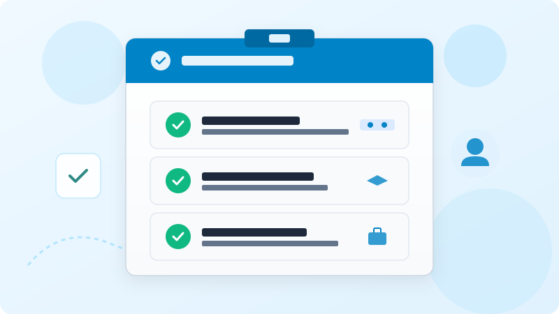
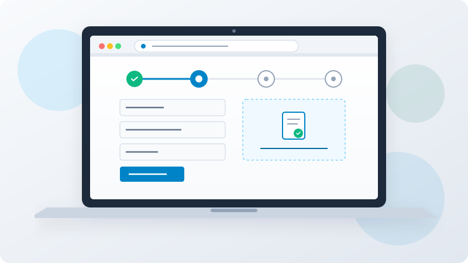
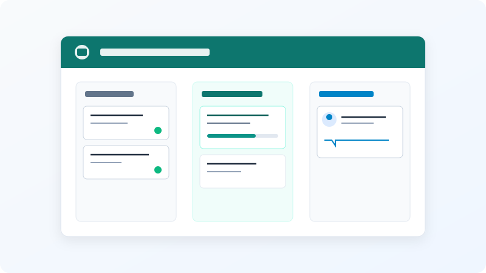
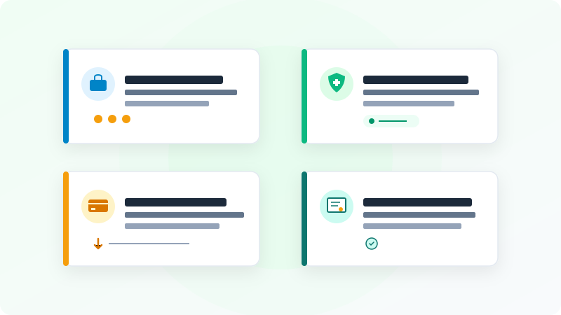
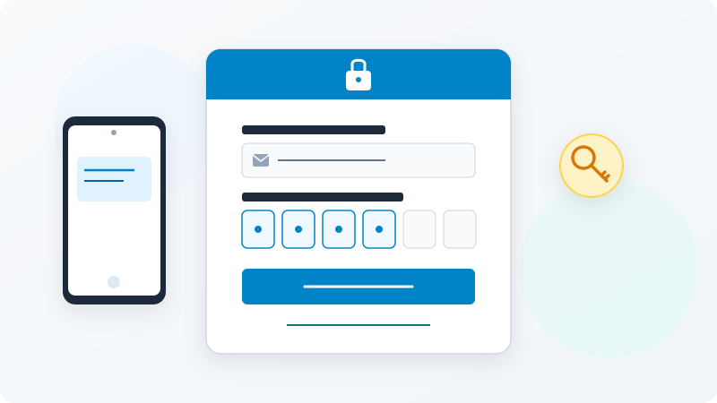
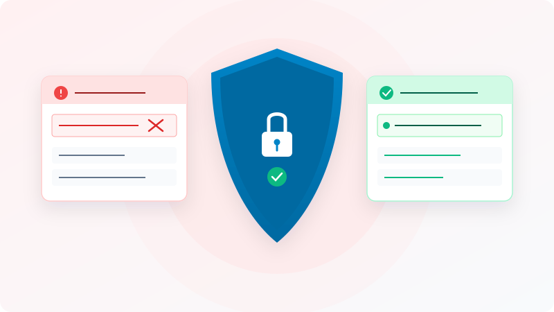
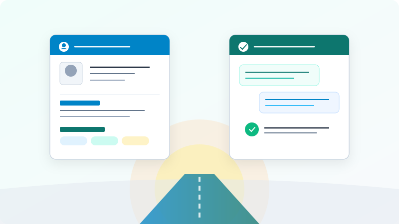

Guía Informativa Independiente: Verificador y Requisitos de Jóvenes Construyendo el Futuro
Manual práctico y herramienta orientativa para comprender los criterios iniciales de elegibilidad, las etapas de capacitación y las precauciones de seguridad digital.
Verificador de requisitos básicos orientativo
Bienvenido a este recurso de orientación ciudadana. El propósito de este verificador interactivo es ofrecerte una estimación preliminar sobre si tu perfil actual coincide con los lineamientos básicos de edad y situación de ocupación establecidos históricamente para incorporarse como aprendiz en el programa. Esta pequeña aplicación funciona de forma local en tu navegador, sin recopilar información personal identificable, sin formularios de registro y sin solicitar documentos confidenciales.
Ten muy presente que el resultado generado por este formulario es puramente informativo, orientativo y no vinculante. No representa una constancia de aceptación, no sustituye la revisión oficial efectuada por las autoridades laborales y no garantiza la asignación de un espacio de formación. Toda solicitud formal debe tramitarse exclusivamente en los canales del programa. Para conocer los períodos en los que se reciben nuevas solicitudes y los términos vigentes aplicables a tu localidad, confirma los datos vigentes en el sitio oficial.

Esquema visual representativo de los tres criterios fundamentales de ingreso al programa.
¿Qué es el programa Jóvenes Construyendo el Futuro y cuál es su objetivo central?
Jóvenes Construyendo el Futuro representa una de las estrategias de política social y desarrollo laboral implementadas por el Gobierno de México a través de la Secretaría del Trabajo y Previsión Social (STPS). El núcleo de esta intervención pública radica en generar un puente directo entre personas jóvenes que enfrentan dificultades para ingresar al mercado laboral y unidades productivas de diversa índole, comúnmente denominadas centros de trabajo. En lugar de ofrecer un subsidio asistencial sin actividad asociada, el programa plantea un modelo de formación práctica en el trabajo en el que cada participante se incorpora temporalmente a una empresa, comercio, taller artesanal o colectivo para aprender un oficio o actividad profesional bajo la orientación directa de un tutor experimentado.
Si quieres una explicación complementaria sobre requisitos, registro y acceso, puedes consultar esta guía informativa independiente sobre Jovenes Construyendo el Futuro.
El grupo poblacional al que se orienta de manera prioritaria comprende a jóvenes de entre 18 y 29 años de edad que, por circunstancias diversas, no cuentan con un trabajo remunerado en el sector formal ni informal y tampoco se hallan inscritos en el sistema educativo nacional. Durante décadas, este sector de la población ha experimentado barreras estructurales significativas: falta de experiencia previa comprobable, escasas oportunidades de entrenamiento en contextos reales de producción y dificultades para obtener referencias laborales confiables. Al integrarse como aprendiz, la persona adquiere la posibilidad de sumergirse durante un período de hasta doce meses en una rutina de trabajo real, con horarios, responsabilidades y dinámicas organizacionales que potencian su desarrollo personal y profesional.
Es fundamental clarificar la naturaleza jurídica y funcional de este vínculo. La relación existente entre el centro de trabajo y el aprendiz no se rige por un contrato de trabajo tradicional, sino por un acuerdo formativo de carácter social respaldado institucionalmente. Esto implica que el centro receptor no asume el pago del salario ni de las prestaciones laborales convencionales; en su lugar, el Estado otorga una beca o apoyo económico mensual que se transfiere de manera directa al aprendiz a través de una institución bancaria oficial, complementada con cobertura médica ante el Instituto Mexicano del Seguro Social durante los meses que dura la preparación práctica. Para verificar los montos autorizados para el ejercicio fiscal presente y las disposiciones normativas vigentes, confirma los datos vigentes en el sitio oficial.
Asimismo, el programa busca reactivar economías locales y comunitarias al permitir que pequeños establecimientos barriales, cooperativas agrícolas y empresas familiares reciban talento joven con deseos de superación, fomentando la transferencia intergeneracional de conocimientos tradicionales, técnicos y administrativos. A lo largo de la República Mexicana, miles de jóvenes han aprovechado este mecanismo formativo como un primer escalón sólido hacia la autonomía económica y la inserción duradera en el mercado de trabajo.
La interacción cordial y cotidiana entre aprendiz y tutor constituye el corazón pedagógico del esquema formativo.
Requisitos básicos explicados en términos generales
Aunque las reglas de operación emitidas anualmente pueden incorporar precisiones metodológicas o ajustes según los objetivos de cada ejercicio presupuestal, existen condiciones esenciales que definen la elegibilidad de los aspirantes. Conocer estos criterios con anticipación te permitirá valorar con objetividad tus posibilidades de participación y evitar contratiempos durante las etapas de solicitud.
1. Criterio de edad (18 a 29 años cumplidos)
El límite de edad constituye un parámetro indispensable. Para poder solicitar el ingreso, el aspirante debe haber cumplido los 18 años al momento exacto de formalizar su registro digital. No es viable registrarse teniendo 17 años con la expectativa de cumplir la mayoría de edad semanas después, ya que el sistema automatizado valida la fecha de nacimiento contra los registros oficiales de población. Por el extremo superior, la persona puede participar si cuenta con 29 años cumplidos al solicitar su vinculación. Si durante los doce meses de capacitación cumples 30 años, por regla general concluyes normalmente tu periodo formativo ya pactado, pero no podrás volver a solicitar un segundo año. Para conocer las especificaciones sobre casos límite de edad, confirma los datos vigentes en el sitio oficial.
2. Condición de no estudiar ni trabajar
La premisa fundacional del programa es atender a personas que no se encuentran activas en la escuela ni en un empleo remunerado. Esto significa que si cuentas con un empleo formal registrado o recibes un salario mediante nómina, tu perfil no cumple con el objetivo de la convocatoria. De igual manera, si posees una matrícula activa en alguna universidad, bachillerato o instituto técnico escolarizado, se asume que tu ocupación primordial es el estudio. La intención de esta regla es garantizar que el aprendiz cuente con la disponibilidad temporal indispensable para cumplir con las jornadas de capacitación que determine el centro de trabajo receptor.
3. Documentación general de identidad y residencia
El proceso exige contar con documentos que acrediten fehacientemente la identidad ciudadana y el domicilio del interesado en territorio mexicano. En términos generales, los interesados deben preparar con anticipación su Clave Única de Registro de Población (CURP) debidamente certificada, una identificación oficial con fotografía vigente (como la credencial para votar expedida por el Instituto Nacional Electoral) y un comprobante domiciliario reciente que certifique su lugar de residencia habitual. Las autoridades recomiendan disponer de estos archivos digitalizados con absoluta nitidez fotográfica para evitar que el expediente resulte rechazado por ilegibilidad durante la fase de validación técnica.
4. Compromiso de cumplimiento del plan de capacitación
Más allá de los requisitos documentales, incorporarse a un centro laboral requiere asumir un compromiso ético y formativo. Los aspirantes deben manifestar su disposición a respetar los reglamentos internos de seguridad e higiene del centro receptor, acatar las instrucciones pedagógicas de los tutores asignados y asistir puntualmente durante los días y horarios que establezca el plan de actividades acordado. Para examinar la normatividad detallada y los supuestos de excepción, confirma los datos vigentes en el sitio oficial.
Cómo funciona el proceso paso a paso: registro, revisión de datos, selección de centro y capacitación
Comprender la secuencia de etapas que componen el programa es fundamental para gestionar adecuadamente las expectativas personales. El procedimiento ha sido diseñado para operar en una modalidad prácticamente digital, permitiendo que jóvenes de cualquier entidad federativa puedan gestionar su expediente desde una computadora con conexión a internet o un teléfono inteligente.

La plataforma en línea estructura el alta del aprendiz mediante fases consecutivas de captura y verificación de datos.
Paso 1: Creación de la cuenta en la plataforma digital
El punto de partida consiste en ingresar al portal institucional habilitado por la Secretaría del Trabajo. En dicho espacio, la persona interesada debe ingresar su CURP, lo que permite al sistema verificar de forma inmediata los datos biográficos esenciales (nombre, fecha de nacimiento, sexo y entidad de registro). Posteriormente, se solicita capturar datos de contacto actualizados: un correo electrónico de uso frecuente y un número telefónico celular donde el aspirante pueda recibir notificaciones y claves de seguridad. Es de máxima relevancia registrar un correo al que tengas acceso permanente, ya que será la llave para recuperar contraseñas y recibir avisos sobre tu estatus.
Paso 2: Captura del expediente y carga de documentos
Una vez creada la cuenta, el usuario debe completar los módulos informativos de su perfil: nivel máximo de estudios concluidos, áreas de interés ocupacional (por ejemplo: actividades administrativas, ventas, oficios manuales, servicios técnicos, arte y diseño, agropecuarias o industriales) y domicilio exacto. En esta misma pantalla, se solicita subir las imágenes digitalizadas de la identificación oficial y del comprobante de residencia, así como una fotografía del rostro del aspirante sosteniendo su identificación para verificar identidad. Las autoridades realizan una revisión documental técnica que puede demorar varios días hábiles dependiendo de la demanda.
Paso 3: Exploración del catálogo de centros de trabajo disponibles
Cuando el perfil del aspirante se encuentra validado y la plataforma habilita la opción de vinculación en su demarcación territorial, se despliega un mapa o catálogo de centros de trabajo cercanos que cuentan con planes de capacitación registrados. En este catálogo es posible examinar qué actividades formativas ofrece cada centro, cuántas horas comprende la jornada prevista, qué conocimientos se esperan transmitir y la ubicación exacta de la empresa o taller. El aspirante tiene la facultad de comparar las alternativas y postularse a la opción que mejor se alinee con sus vocaciones y proyectos de vida. Recuerda que la disponibilidad de vacantes varía según el municipio, el presupuesto asignado y los cupos disponibles en cada ciclo presupuestal; confirma los datos vigentes en el sitio oficial.
Paso 4: Entrevista y acuerdo de inicio con el centro receptor
Al elegir una vacante, el sistema genera una ficha de contacto formativo. El aspirante debe comunicarse o presentarse en la dirección indicada para entrevistarse con la persona designada como tutor. Esta entrevista no es una prueba de selección eliminatoria convencional, sino una reunión de alineación mutua para conocer las instalaciones, platicar sobre las tareas que integran el plan formativo y acordar la fecha de inicio. Ambas partes deben confirmar la aceptación en la plataforma digital para que el sistema formalice el alta del aprendiz.
Paso 5: Desarrollo de la capacitación de hasta doce meses
A partir de la fecha de inicio acordada, el joven asiste diariamente a su centro formativo para desarrollar las actividades contempladas en el plan. Durante este período, tanto el aprendiz como el tutor emiten periódicamente evaluaciones o reportes sobre el avance de los aprendizajes y la asistencia, lo que permite a las autoridades corroborar que la capacitación se está llevando a cabo conforme a las directrices de la política pública. Al cumplir el ciclo completo de formación, se da por concluida la participación y el aprendiz puede solicitar su acreditación de competencias.
El papel formativo del tutor y del centro de trabajo
El éxito de la experiencia de capacitación depende en gran medida de la relación colaborativa que se construye entre el centro de trabajo y el aprendiz. Los centros de trabajo no son meros receptores pasivos, sino espacios de enseñanza práctica donde personas con experiencia en el oficio o profesión transmiten sus saberes a las nuevas generaciones.

La estructura pedagógica del centro de trabajo combina inducción inicial, desarrollo de prácticas y seguimiento continuo.
Responsabilidades asignadas al tutor
El tutor es la persona responsable dentro del centro de trabajo encargada de planificar, acompañar y evaluar el proceso formativo del joven. Entre sus funciones principales se encuentran:
Diseño y ejecución del plan formativo: Establecer metas de aprendizaje claras, desde conceptos básicos del área hasta tareas de mayor complejidad técnica.
Instrucción sobre seguridad e higiene: Enseñar al aprendiz las normas de prevención de accidentes, el uso adecuado de equipo de protección personal y los protocolos en caso de emergencia.
Retroalimentación pedagógica y continua: Guiar al aprendiz ante dudas, corregir errores de forma respetuosa y destacar sus avances en la adquisición de destrezas.
Reporte de actividades: Confirmar periódicamente la asistencia y el desempeño del aprendiz en la plataforma oficial del programa.
Límites y conductas prohibidas para los tutores
La normatividad oficial establece límites rigurosos para proteger a las personas participantes. Los centros de trabajo y los tutores tienen estrictamente prohibido solicitar a los aprendices aportaciones económicas, retener sus tarjetas bancarias o exigir comisiones bajo ningún concepto. Asimismo, está prohibido sustituir a trabajadores permanentes de base con aprendices del programa o asignarles cargas de trabajo extenuantes que desvirtúen el carácter formativo del esquema. En caso de suscitarse irregularidades en el centro laboral, las y los jóvenes disponen de mecanismos institucionales para reportar las incidencias; confirma los datos vigentes en el sitio oficial.
Compromisos del aprendiz en el centro receptor
Por su parte, el aprendiz asume la responsabilidad de conducirse con profesionalismo, seriedad y puntualidad. Es indispensable atender las indicaciones del tutor, mantener una comunicación respetuosa con los compañeros de trabajo y cuidar los instrumentos, maquinaria o mobiliario puestos a su disposición para el aprendizaje. La actitud positiva y la disciplina diaria suelen marcar la diferencia entre una capacitación superficial y una experiencia transformadora con impacto duradero en el futuro laboral.
Qué adquieren los aprendices: competencias laborales, hábitos profesionales y cobertura médica básica
Participar en esta iniciativa gubernamental representa una oportunidad multifacética que va más allá de un respaldo monetario periódico. Los beneficios que obtienen quienes concluyen satisfactoriamente su etapa formativa repercuten profundamente en su capacidad para abrirse camino en el entorno productivo nacional.

El programa conjuga experiencia en campo, cobertura médica institucional y fortalecimiento del perfil curricular.
1. Experiencia práctica comprobable
Uno de los obstáculos más frustrantes al buscar trabajo es encontrarse con vacantes que exigen experiencia previa de uno o dos años. Al permanecer hasta doce meses en un centro productivo, el joven adquiere vivencias directas, maneja herramientas del sector y comprende el funcionamiento interno de una organización, lo cual se convierte en un respaldo fundamental al momento de redactar su currículum vitae y solicitar futuras oportunidades de empleo.
2. Desarrollo de competencias blandas y hábitos laborales
En el mundo laboral contemporáneo, las habilidades técnicas deben complementarse invariablemente con las denominadas habilidades blandas. Cumplir con una jornada de capacitación diaria fomenta hábitos indispensables: la disciplina horaria, la capacidad de trabajar en equipo, la escucha activa, la resolución asertiva de imprevistos y el sentido de responsabilidad individual frente a objetivos compartidos. Estas cualidades suelen ser ampliamente valoradas por reclutadores de talento de todos los sectores.
3. Cobertura médica y seguridad durante la capacitación
Las personas registradas cuentan con incorporación al régimen del Instituto Mexicano del Seguro Social durante los meses de su vinculación activa. Esta cobertura brinda atención médica, hospitalaria y farmacéutica, protegiendo al aprendiz frente a enfermedades y eventuales accidentes que pudieran presentarse en el ejercicio de las labores de capacitación en el centro de trabajo. Para verificar el procedimiento de alta ante el instituto y los servicios médicos correspondientes, confirma los datos vigentes en el sitio oficial.
4. Respaldo económico mensual sin cobro de comisiones
El programa otorga mensualmente un apoyo económico directo transferido a una cuenta bancaria del aprendiz. Este recurso tiene el propósito de sufragar gastos básicos de transporte, alimentación e insumos formativos mientras dura la estancia en el centro laboral. Dado que los montos se actualizan periódicamente en función del salario mínimo general y de los presupuestos federales, no se citan cantidades fijas en esta guía; confirma los datos vigentes en el sitio oficial.
5. Constancia formal de acreditación de habilidades
Al término del período de capacitación, los jóvenes que hayan completado sus doce meses y cuenten con sus reportes al corriente reciben una constancia oficial suscrita por el centro de trabajo y la Secretaría del Trabajo. En dicho documento se describen las competencias adquiridas y las tareas desempeñadas, sirviendo como carta de recomendación institucional y acreditación formal de experiencia ante cualquier futuro empleador.
Recuperación de acceso a la cuenta y problemas frecuentes de ingreso
Uno de los contratiempos más comunes entre aspirantes y aprendices activos es la pérdida de acceso a su perfil digital. Dado que todo el seguimiento del programa se realiza en línea, no poder ingresar al portal puede generar incertidumbre y retrasar notificaciones relevantes.

El restablecimiento de contraseña se realiza mediante mecanismos seguros de validación por correo electrónico o telefonía móvil.
Causas habituales de bloqueo o extravío de credenciales
Entre las situaciones que con mayor frecuencia provocan la pérdida de acceso se encuentran:
Olvido de la contraseña: Introducir claves erróneas de manera consecutiva puede bloquear temporalmente el acceso por motivos de seguridad informática.
Cambio o pérdida del número telefónico celular: No poder recibir los códigos de verificación por mensaje de texto SMS cuando se extravía o da de baja la línea móvil registrada.
Inaccesibilidad al correo electrónico registrado: Utilizar cuentas de correo antiguas de las cuales se desconoce la contraseña o que fueron canceladas por inactividad.
Errores de captura en la CURP: Introducir caracteres equivocados al momento de iniciar sesión.
Procedimiento general para restablecer la contraseña
En la pantalla de acceso de la plataforma gubernamental existe un botón o enlace denominado habitualmente "¿Olvidaste tu contraseña?". Al seleccionarlo, el sistema te solicitará ingresar tu CURP y te permitirá elegir entre recibir un enlace o código de restablecimiento en tu buzón de correo electrónico o en tu número celular registrado. Al recibirlo, podrás generar una nueva contraseña segura compuesta por letras mayúsculas, minúsculas, números y caracteres especiales.
Qué hacer si no tienes acceso ni al teléfono ni al correo registrado
Si cambiaste de número celular y perdiste el acceso a tu cuenta de correo, el sistema digital no podrá enviarte el código de recuperación de forma automática. En estos casos, deberás recurrir a los canales oficiales de atención ciudadana proporcionados por la Secretaría del Trabajo (tales como números telefónicos institucionales de atención o módulos presenciales de atención ciudadana autorizados) para solicitar una actualización de tus datos de contacto presentando tu identificación oficial. Jamás confíes en personas extrañas en redes sociales que ofrezcan recuperar cuentas a cambio de depósitos monetarios, pues se trata invariablemente de estafas; confirma los datos vigentes en el sitio oficial.
Prevención de fraudes y hábitos seguros en la navegación
La enorme popularidad del programa Jóvenes Construyendo el Futuro ha propiciado que delincuentes cibernéticos y personas inescrupulosas intenten engañar a personas jóvenes mediante páginas falsas, perfiles apócrifos en redes sociales y promesas ilegales de registro exprés. Proteger tu información personal y patrimonial requiere conocer cómo operan estos fraudes y adoptar pautas preventivas rigurosas.

La única garantía de seguridad radica en operar directamente en el dominio gubernamental autorizado y sin intermediarios.
Regla de oro: Todos los trámites del programa son estrictamente personales y 100% gratuitos. Nadie tiene facultades para cobrarte por un registro, una cita o una vacante.
El único enlace web oficial para trámites y consultas
Para salvaguardar tu privacidad, cerciórate siempre de que la dirección que figura en la barra de tu navegador web coincida con el portal institucional. La única plataforma digital autorizada para tramitar tu solicitud, postularte y consultar tu estatus oficial es: https://jovenesconstruyendoelfuturo.stps.gob.mx/.
Cualquier otra página web con terminaciones comerciales (tales como .com, .net, .org, .xyz o .site) que pretenda hacerse pasar por el sitio oficial o que solicite contraseñas y dinero representa una suplantación apócrifa que debe ser ignorada de inmediato.
Identificación de conductas sospechosas y "coyotes" digitales
Mantente alerta frente a cualquiera de las siguientes situaciones:
Gestores que cobran por registrarte: Falsos facilitadores que ofrecen "garantizarte un cupo" o "agilizar tu validación" a cambio de depósitos o transferencias de dinero.
Petición de contraseñas y accesos: Personas que te piden tu usuario, contraseña de la plataforma o clave de correo electrónico. La STPS jamás te solicitará tus contraseñas privadas.
Cobro de porcentajes de la beca: Centros de trabajo fraudulentos o tutores que condicionan la permanencia del aprendiz a entregar una fracción del apoyo mensual o que pretenden retener la tarjeta bancaria. Esta práctica constituye un delito grave y debe ser denunciada ante las autoridades laborales competentes.
Grupos de mensajería no oficiales: Grupos en aplicaciones móviles de mensajería instantánea que solicitan imágenes de credenciales electorales y comprobantes de domicilio para supuestos registros colectivos.
Ante cualquier sospecha o irregularidad en tu proceso, suspende la comunicación con el intermediario, cambia tus contraseñas y confirma los datos vigentes en el sitio oficial.
Consejos para prepararse: organización de documentos, currículum formativo y contacto con el tutor
Una preparación cuidadosa antes de postularte a un centro de trabajo incrementa sustancialmente las probabilidades de que tu proceso avance de manera fluida y de que encuentres un espacio formativo enriquecedor para tu vocación.

Organizar tus documentos y preparar una presentación honesta de tus metas formativas fortalece tu acercamiento con el centro receptor.
1. Prepara y respalda tus archivos digitales
Antes de comenzar tu captura en la plataforma, reúne tus documentos básicos y digitalízalos adecuadamente:
Asegúrate de que las fotografías de tu identificación oficial tengan buena iluminación, sin reflejos deslumbrantes y con todos los datos legibles.
Verifica que el comprobante de domicilio sea reciente (habitualmente con antigüedad no mayor a tres meses) y que los nombres de las calles coincidan con tu ubicación actual.
Descarga tu CURP actualizada en formato digital directamente del portal nacional de población para evitar inconsistencias en apellidos o claves de registro.
Guarda copias de seguridad de estos archivos en una carpeta personal segura en tu teléfono o computadora.
2. Estructura una síntesis curricular formativa básica
Aunque no se requiere experiencia laboral previa para ingresar al programa, redactar una hoja de vida o resumen personal sencillo resulta sumamente provechoso al momento de acudir a tu entrevista con el centro de trabajo. En esta síntesis puedes plasmar:
Datos generales de contacto: Nombre completo, teléfono, correo electrónico y municipio de residencia.
Formación escolar alcanzada: Primaria, secundaria, preparatoria o estudios técnicos concluidos o truncos.
Intereses y habilidades prácticas: Manejo de paquetería básica de computación, facilidad para atender personas, destrezas en herramientas mecánicas, cocina, manualidades o ventas.
Objetivos de aprendizaje: Qué oficio o competencia deseas adquirir durante los meses de estancia en el centro formativo y cómo planeas aprovechar la tutoría.
3. Cómo abordar el primer acercamiento o entrevista con el tutor
Cuando el sistema genere tu ficha de vinculación y te presentes ante el centro de trabajo, mantén una actitud profesional y entusiasta. La puntualidad es tu primera carta de presentación: preséntate unos minutos antes de la hora acordada, viste de manera acorde a las actividades del centro (ropa formal si es una oficina o vestimenta cómoda y segura si es un taller o fábrica) y muestra disposición genuina para aprender. No temas formular preguntas sobre el plan de capacitación, los horarios previstos y las reglas de convivencia del lugar. Este diálogo inicial sentará las bases de un vínculo constructivo; confirma los datos vigentes en el sitio oficial.
Preguntas frecuentes sobre Jóvenes Construyendo el Futuro
1. ¿La inscripción y todos los trámites del programa son enteramente gratuitos?
Sí, de manera absoluta e inapelable. Todo el proceso de incorporación, validación de documentos y vinculación con centros de trabajo es 100% gratuito y de gestión personal. No existen cuotas de inscripción, costos de examen ni comisiones de ninguna índole. Si una persona física, negocio o gestor te pide dinero para facilitarte el registro o apartarte una plaza, repórtalo de inmediato; confirma los datos vigentes en el sitio oficial en jovenesconstruyendoelfuturo.stps.gob.mx.
2. ¿Cuánto tiempo dura la capacitación en el centro de trabajo receptor?
El periodo de permanencia contempla hasta un máximo de doce meses continuos en el centro de trabajo seleccionado. Durante este tiempo, el aprendiz asiste a las jornadas prácticas acordadas con el tutor, acumulando experiencia en las tareas productivas previstas en el plan de aprendizaje. Al concluir los doce meses, el proceso formativo finaliza; confirma los datos vigentes en el sitio oficial.
3. ¿Qué apoyos y coberturas reciben las personas que se capacitan como aprendices?
Durante el periodo en que la capacitación se mantenga activa, el aprendiz recibe mensualmente un apoyo económico directo transferido sin intermediarios a una cuenta bancaria personal, además de cobertura médica y de salud a través del Instituto Mexicano del Seguro Social (IMSS) mientras dure la capacitación. Para conocer los calendarios y condiciones actuales, confirma los datos vigentes en el sitio oficial en jovenesconstruyendoelfuturo.stps.gob.mx.
4. ¿Puedo participar si actualmente estoy estudiando los fines de semana o en modalidad virtual?
Las reglas generales del programa estipulan que el aspirante no debe encontrarse matriculado en el sistema educativo nacional al momento de solicitar su vinculación, debido a la exigencia de disponibilidad horaria para cumplir las actividades de la capacitación. No obstante, las normativas específicas sobre cursos libres o modalidades no escolarizadas pueden presentar interpretaciones particulares en cada ciclo anual; confirma los datos vigentes en el sitio oficial.
5. ¿Qué sucede si realizo trabajos informales de manera ocasional?
El objetivo prioritario del programa es atender a personas que no cuentan con un empleo formal ni perciben ingresos laborales continuos. Al incorporarte como aprendiz adquieres el compromiso de cumplir la jornada formativa asignada por el centro de trabajo, por lo que no debes contar con una relación laboral activa que interfiera con tu capacitación; confirma los datos vigentes en el sitio oficial en jovenesconstruyendoelfuturo.stps.gob.mx.
6. ¿Es posible cambiar de centro de trabajo si surgen problemas en el lugar asignado?
Las reglas de operación suelen contemplar supuestos en los que un aprendiz puede solicitar una segunda oportunidad de vinculación o desvinculación, por ejemplo si el centro de trabajo no respeta el plan de capacitación, si cambia de domicilio de forma inconveniente o si se presentan circunstancias de fuerza mayor. El procedimiento formal y los plazos autorizados para tramitar un cambio deben consultarse directamente en la plataforma digital; confirma los datos vigentes en el sitio oficial.
7. ¿Se garantiza un contrato laboral definitivo al concluir los doce meses de capacitación?
El programa no impone al centro de trabajo la obligación legal de contratar al aprendiz una vez concluido el ciclo de doce meses. No obstante, un porcentaje considerable de aprendices logra incorporarse a la plantilla permanente de las empresas gracias a su buen desempeño, puntualidad y aprendizaje demostrado durante el año formativo. En caso de no ser contratado, el egresado cuenta con su constancia de habilidades para postularse en otras empresas del mercado; confirma los datos vigentes en el sitio oficial.
8. ¿Qué documentos se requieren habitualmente para integrar el expediente digital?
De forma habitual, los aspirantes deben disponer de su Clave Única de Registro de Población (CURP) verificada, una identificación oficial con fotografía vigente y un comprobante de domicilio reciente en formato digital nítido. Para revisar las especificaciones de formato y tamaño de archivo aceptadas por el sistema, confirma los datos vigentes en el sitio oficial en jovenesconstruyendoelfuturo.stps.gob.mx.
9. ¿Cómo saber si la plataforma digital está aceptando nuevas vinculaciones en este momento?
Los períodos para recibir nuevas solicitudes y habilitar vinculaciones en centros de trabajo dependen de los presupuestos asignados y de los cupos disponibles en cada municipio o entidad federativa. No existen fechas perpetuas ni convocatorias abiertas de forma permanente; por ello, los interesados deben supervisar de manera periódica los comunicados emitidos en los canales institucionales. Para revisar la apertura de espacios, confirma los datos vigentes en el sitio oficial.
10. ¿Dónde se resuelven dudas técnicas oficiales o aclaraciones de trámites?
Toda aclaración oficial, problema con la validación de documentos o reporte de incidencias técnicas en la plataforma debe canalizarse invariablemente por las vías institucionales oficiales de la Secretaría del Trabajo y Previsión Social (STPS), a través de los números telefónicos gubernamentales de atención ciudadana y las mesas de ayuda publicadas en su portal; confirma los datos vigentes en el sitio oficial en jovenesconstruyendoelfuturo.stps.gob.mx.
Conclusión y recomendaciones finales para aspirantes
El programa Jóvenes Construyendo el Futuro representa una valiosa oportunidad formativa para adquirir experiencia en campo, desarrollar destrezas prácticas y establecer los primeros cimientos de una trayectoria profesional sólida. La disciplina personal, la responsabilidad en el centro de trabajo y la proactividad constante son los ingredientes decisivos para transformar estos meses de aprendizaje en un verdadero trampolín laboral.
Como recomendación final, te invitamos a actuar siempre con cautela digital: preserva tus datos confidenciales, evita compartir contraseñas y mantente informado exclusivamente a través de los canales institucionales reconocidos. Esta guía informativa independiente ha sido elaborada con el sincero deseo de orientarte con claridad, neutralidad y transparencia en tu camino hacia el desarrollo laboral. Para cualquier trámite formal o consulta sobre convocatorias, confirma los datos vigentes en el sitio oficial en jovenesconstruyendoelfuturo.stps.gob.mx.